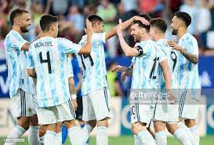
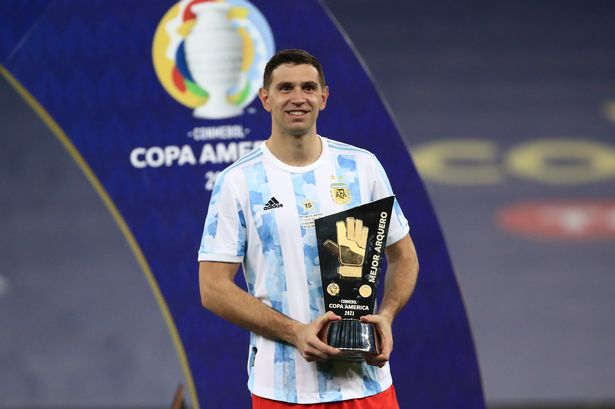

PRESENTATION
represents Argentina in men's international football and is administered by the Argentine Football Association,
the governing body for football in Argentina.
has appeared in five World Cup finals, including the first final in 1930, which they lost 4–2 to Uruguay.
Argentina won in their next final appearance in 1978, beating the Netherlands 3–1 at extra time.
Argentina won again in 1986 with a 3–2 victory over West Germany, and a tournament campaign inspired by their captain Diego Maradona.
They made the World Cup finals once more in 1990, and lost 1–0 to West Germany through an 87th minute penalty converted by Andreas Brehme.
Argentina made their fifth appearance in a World Cup final in 2014, again losing to Germany 1–0 during extra-time.
The team's World Cup-winning managers are César Luis Menotti in 1978 and Carlos Bilardo in 1986.
SQUAD
Coach:
Lionel Scaloni
Captain:
Lionel Messi
Goalkeepers:
GK: Emi Martinez (Aston Villa)GK: Franco Armani (River Plate)
GK: Geronimo Rulli (Villarreal)
Defenders:
DF: Marcos Acuna (Sevilla)
DF: Juan Foyth (Villarreal)
DF: Lisandro Martinez (Manchester United)
DF: Nicolas Tagliafico (Lyon)
DF: Cristian Romero (Tottenham)
DF: Nicolas Otamendi (Benfica)
DF: Nahuel Molina (Atletico Madrid)
DF: Gonzalo Montiel (Sevilla)
DF: German Pezzella (Real Betis)
Midfielders:
MF: Angel Di Maria (Juventus)
MF: Leandro Paredes (Juventus)
MF: Rodrigo De Paul (Atletico Madrid)
MF: Alexis Mac Allister (Brighton)
MF: Enzo Fernandez (Benfica)
MF: Exequiel Palacios (Bayer Leverkusen)
MF: Guido Rodriguez (Real Betis)
Forwards:
FW: Lionel Messi (PSG)
FW: Lautaro Martinez (Inter Milan)
FW: Paulo Dybala (Roma)
FW: Angel Correa (Atletico Madrid)
FW: Julian Alvarez (Manchester City)
FW: Thiago Almada (Atlanta United)
FW: Alejandro Gomez (Sevilla)
click here to view squad
BEST-PLAYER


know-more
REVIEWS

The 2021 Copa America not only provided Lionel Messi with his first senior international title; it also confirmed the emergence of several footballers nurtured and mentored by Lionel Scaloni. Entering the final stage of a rebuilding process that began as soon as he took up the reins of La Albiceleste, the astute coach called up a number of players who were not on the radar of the average Argentina fan, but who have now fully established themselves in the squad. In this context, it seems appropriate to mention another positive: Argentina’s recent rise up the FIFA Coca/Cola World Ranking, where they now sit in sixth place after their triumph in Brazil. Scaloni’s rejuvenated side are clearly in a good place prior to the upcoming resumption of FIFA World Cup Qatar 2022™ qualifiers.

With FIFA World Cup-winning medals under his belt at U-17 and U-20 level, Emiliano Martinez came through the ranks at English giants Arsenal, far from the media glare in his homeland. The shot-stopper received his first call-up to the senior national team for a friendly in 2011, where he was an unused substitute. He only returned to the international scene in 2019, when Scaloni brought him back into the fold for a Qatar 2022 qualifying match.
He was already the most expensive goalkeeper in the history of Argentinian football by the time he made his international debut against Chile on the seventh matchday of World Cup qualifying, although he was unfortunate to pick up an injury in the following game. Scaloni retained him as his starting keeper for the Copa America, where he was instrumental in the team’s success. After he saved three penalty kicks in a shoot-out against Colombia in the semi-finals, Lionel Messi referred to him as ‘a phenomenon’.